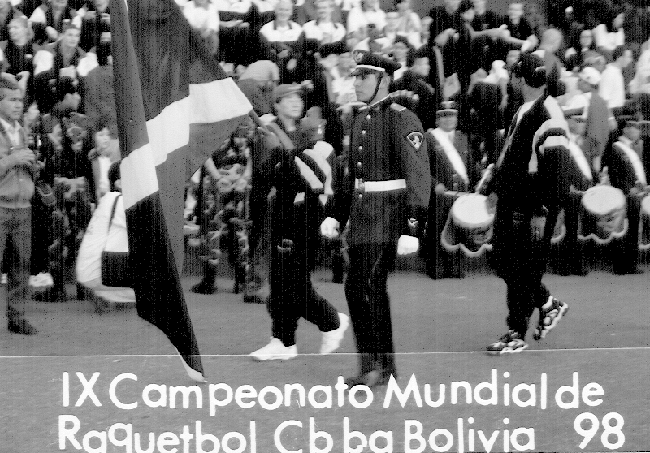
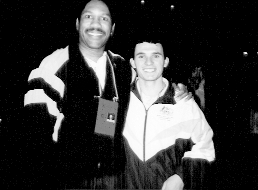
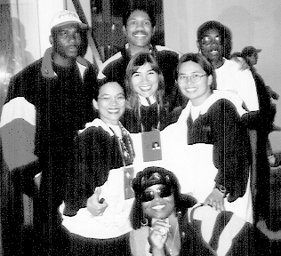
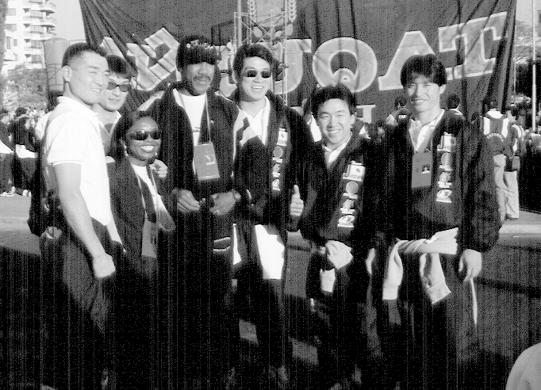
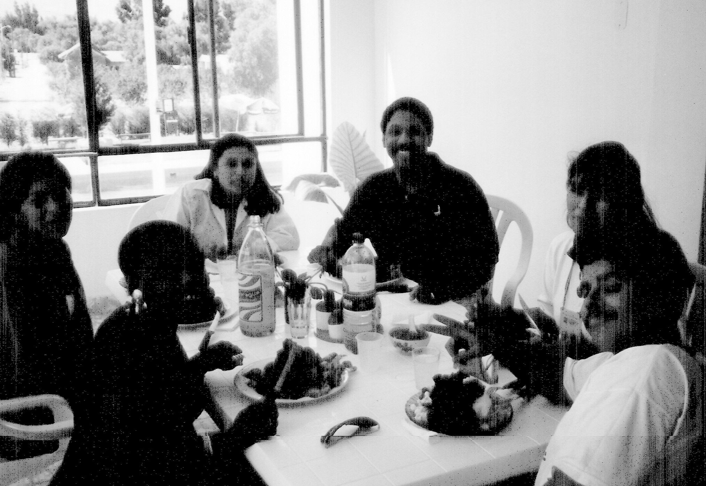

1998 World Racquetball Championships
Cochabamba, Bolivia
A National Celebration
The opening ceremonies was held in the main square. Racquetball is so popular in Bolivia that companies closed early so that employees could attend the ceremonies. There were more police officers (looked more like the army) there than there are at the Dunkin Donuts annual convention. Security and media relations was the best I've ever seen. (& this from the mouth of a media/motivational consultant)
The Jamaican team received an incredible amount of cheers and applause. In fact, we were ranked right up there as the top five best received teams. Such a warm response surprised even us. Evidently, Jamaica is a popular island among many south of the equator.
Marching Under the Flag
Each Team was escorted in by an officer in full dress uniform. The military band supplied the beat.


As the first female to compete for Jamaica, Lurine Barnes got the honor of carrying the flag.
Outstanding Media Attention
Media attention to these games were outstanding! As one of the top three most popular sports in the country, the World Championships were treated as a national showcase opportunity. Articles appeared in the newspapers everyday and TV and radio personalities were on hand throughout the entire games.
- The local fascination with Jamaica's appearance led to numerous newspaper interviews.
- Barnes was featured in a TV appearance also.
 Edwards is seen here being interviewed for the radio
station.
Edwards is seen here being interviewed for the radio
station.
How It All Went Down
Men's BracketMatch 1
Jamaica vs Mexico
Lost (No surprise there)Faced the #3 seeded global powerhouse.
Match 2
Jamaica vs Australia
LostCompeted against US professional circuit veterans for pure strategic experience.
Match 3 (Elimination)
Jamaica vs Netherlands
Won (Tie-Breaker)Won game 1, dropped game 2, won decisively in a dramatic tie-breaker format!

John is seen here with the Australian player he competed against. That's the thing about this game—some of your good friends you first meet after they clean up the court with your face.

John kills a backhand (which was rare) in his win-or-go-home match against the Netherlands.
Quarterfinals Round: Jamaica vs Nigeria
That match would put us in the quarterfinals for the third division medal rounds. Basically a win over the next opponent guarantees at least a fourth place medal. Any more losses and we're done.
As luck would have it, this opponent was my new friend and roommate at these games. Unfortunately, we had to play that same day, so I wouldn't have an opportunity to tie him to his bed overnight... bummer.
In the end, without the ability to swing a backhand without severe pain, my hope was that I could at least make him sweat a little. Either way, he strategically controlled the game and earned a win. He would now play Guam for the third place medal.
Much like the 1996 games, "I could have been a contender"... "so close and yet so far"... "always the bridesmaid and never the bride"... (well, you get the picture). As it turns out, my injury was serious enough to put me in a sling and keep me off the court for over six months.
Permanent International Friendships
Team Jamaica linked with kindred spirits from many other countries to form deep bonds, cheering each other on throughout the games.

3 ladies from the Guam team pose with Edwards (center-top) and Barnes (bottom-center) as well as players from Nigeria (top corners). This photo appeared in the Bolivian newspaper.

Teams under the banner of "United Nations" are seen here with newcomers from India (middle row & 2nd from left), Vietnam (center back), and coaches (front 2 on left). Jamaica and Nigeria fill in the right and front center.

Barnes prepares to receive serve in one of her tough matches. Barnes, competing internationally for the first time, now has an international ranking among female players in the world.

Team Jamaica seen here with friends from Team Japan. Both teams enjoyed teaching each other popular phrases from their countries. Pretty soon, we'll have the whole Asian continent saying, "Irie, mon!"

Excellence in Local Liaisons
Not only was the opening ceremonies and hotels great but the local committee arranged for local "guides" to be our liaisons during our visit.
They made sure we were protected, ordered the right foods and saw the best sites. They put this event over the top in terms of excellence! (boy was there a ton of food... I gotta go back!)
Official Results
Review complete match breakdown tallies, divisional details, and full team parameters documented during the games.
View Final Standings on R-Ball MagazineCome back later... more to come.